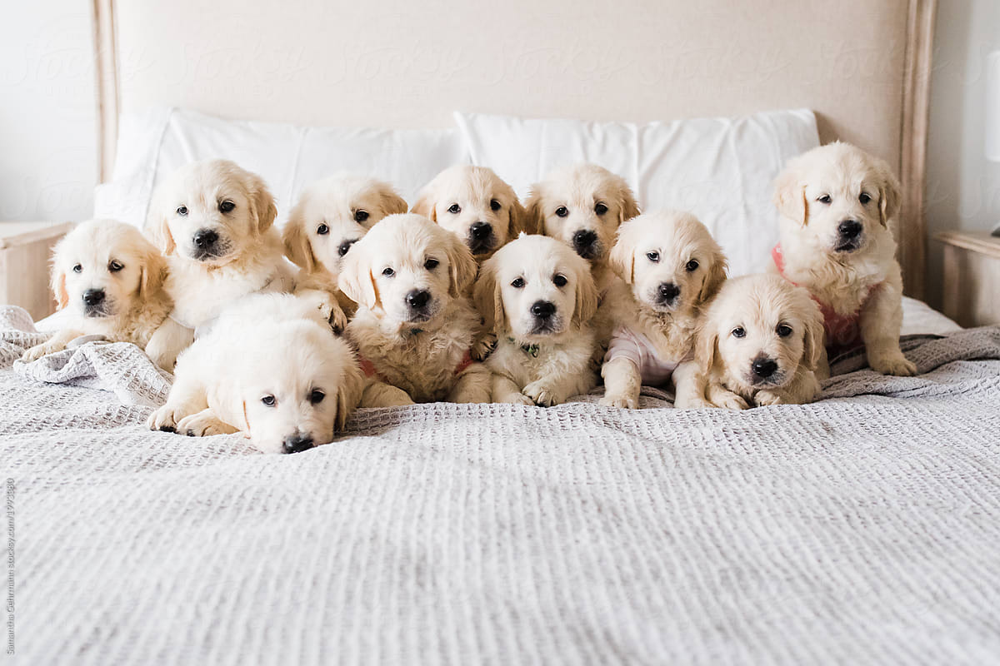

R Package for Image Recognition, Object Detection, and OCR using the Google’s Cloud Vision API.
Google Cloud Vision API
Cloud Vision API enables developers to understand the content of an image by encapsulating powerful machine learning models in an easy-to-use REST API. It quickly classifies images into thousands of categories (such as, “sailboat”), detects individual objects and faces within images, and reads printed words contained within images. You can build metadata on your image catalog, moderate offensive content, or enable new marketing scenarios through image sentiment analysis.
Read more on the capabilities of the Google Cloud Vision API.
About this R package
This package allows you to call the following functionalities: label, text, landmark, face and logo detection.
The project is a continuation of the RoogleVision package by Florian Teschner and is relying on the authentication procedures offered by googleAuthR.
WARNING: the project is in active development and is not guaranteed to be stable in terms of function names, signatures, etc. Contributions through issues, pull requests are more than welcome.
Installation
v0.1.0 is already available on CRAN, you can install it with:
If you need the latest version, just install the package directly from Github:
Authentication
You should use a .json file pertaining to a service account for authentication whose path you should specify in an environment variable GCV_AUTH_FILE for auto-authentication:
This can alternatively be set on the command line or via an Renviron.site or .Renviron file (see here for instructions).
If this is set, upon loading the package authentication happens automatically.
Example
Let us retrieve annotations for this image: 
Label detection (default), with maximum 7 results returned per image:
imagePath <- system.file(
"extdata", "golden_retriever_puppies.jpg", package = "googleCloudVisionR"
)
gcv_get_image_annotations(
imagePaths = imagePath,
feature = "LABEL_DETECTION",
maxNumResults = 7
)
#> image_path mid description score topicality
#> 1: golden_retriever_puppies.jpg /m/0bt9lr Dog 0.9953705 0.9953705
#> 2: golden_retriever_puppies.jpg /m/04rky Mammal 0.9890478 0.9890478
#> 3: golden_retriever_puppies.jpg /m/09686 Vertebrate 0.9851104 0.9851104
#> 4: golden_retriever_puppies.jpg /m/01z5f Canidae 0.9813780 0.9813780
#> 5: golden_retriever_puppies.jpg /m/0kpmf Dog breed 0.9683250 0.9683250
#> 6: golden_retriever_puppies.jpg /m/0d7s3w Puppy 0.9400384 0.9400384
#> 7: golden_retriever_puppies.jpg /m/01t032 Golden retriever 0.8966703 0.8966703Annotation can also happen in batches, allowing for continuing previously stopped (or interrupted) annotations as well.
gcv_get_image_annotations(
imagePaths = c(image_path_1, image_path_2,..., image_path_128),
batchSize = 64L,
savePath = "path/to/annotation_file.csv"
)Here we take 128 images and annotate them in batces of size 64. If, for example, we have previously annotated the first batch of images whose results have been stored in savePath, then only the leftovers are annotated. A dataframe with all annotations is returned and the new set of annotations gets appended to savePath.
Images can not only be read from local disk, but you can use URLs or Google Cloud Storage URIs as well:
gcv_get_image_annotations(c(
"https://bit.ly/2IhUzdE",
"gs://vision-api-handwriting-ocr-bucket/handwriting_image.png"
), maxNumResults = 2)
#> image_path mid description score topicality
#> 1: https://bit.ly/2IhUzdE /m/0bt9lr Dog 0.9953705 0.9953705
#> 2: https://bit.ly/2IhUzdE /m/04rky Mammal 0.9890478 0.9890478
#> 3: gs://vision-api-handwriting-ocr-bucket/handwriting_image.png /m/07s6nbt Text 0.9540842 0.9540842
#> 4: gs://vision-api-handwriting-ocr-bucket/handwriting_image.png /m/03scnj Line 0.9027576 0.9027576